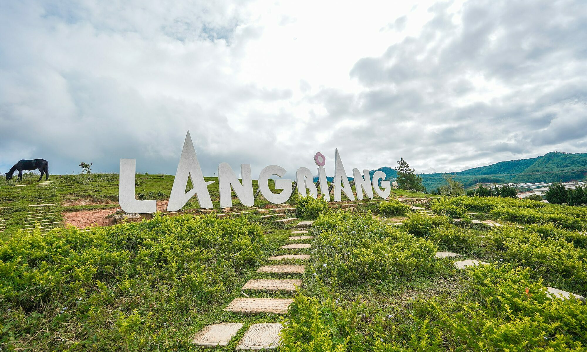
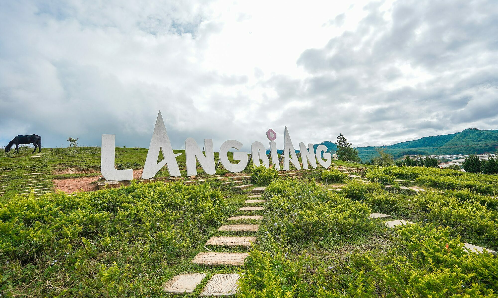

Văn hóa/Lịch sử
Ẩm thực: Tỉnh Lâm Đồng nằm ở vùng núi cao của miền Trung Việt Nam, nên có nhiều đặc sản độc đáo và hấp dẫn. Dưới đây là một số món ăn nổi tiếng của tỉnh Lâm Đồng: Cà phê Đà Lạt, Rau cải Đà Lạt, Bánh mì chảo Đà Lạt, Nem nướng Đà Lạt, Bánh tráng nướng, Sữa đậu nành, Kem bơ Đà Lạt, Kem khói Đà Lạt.
Công trình, kiến trúc: Có nhiều công trình kiến trúc nổi tiếng như: Dinh Bảo Đạ, Nhà thờ Đức Bà Dalat, Thác Datanla, Nụ hoa Atiso, Bông hoa dã quỳ khổng lồ,…
Văn hóa Nét văn hóa đặc trưng của người dân Lâm Đồng thường được thể hiện qua những hoạt động văn hóa truyền thống như hội Lim, rước lồng đèn truyền thống, đua thuyền truyền thống trên sông Đa Dâng, lễ hội cúng tổ, lễ hội đầu năm... Những nét văn hóa này giúp tôn vinh và bảo tồn giá trị văn hóa dân tộc đặc biệt của người dân Lâm Đồng. Cũng không thể không nhắc đến văn hóa ẩm thực của Lâm Đồng với những món ngon đặc sản như nem nướng Đà Lạt, bánh căn, bánh mì chảo, lúa mạch nước, rau Cải Nguồn... Các món ăn này không chỉ ngon miệng mà còn có giá trị văn hóa đặc trưng của vùng đất này. Ngoài ra, Lâm Đồng còn có nhiều danh thắng, di sản văn hóa như Vườn hoa Đà Lạt, hồ Xuân Hương, Thác Pongour, Thác Dambri, Đồi mộng mơ... Tất cả những điều này tạo nên một văn hóa độc đáo và hấp dẫn của tỉnh Lâm Đồng.

 
